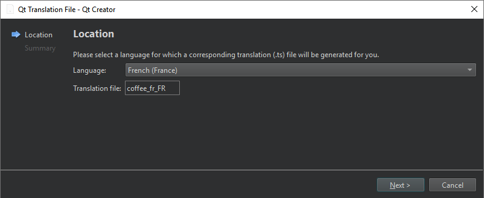

Add translation files
When you create a new project, you can automatically generate a translation source file (TS) for one language. To add other languages later, use a file wizard.
To create a translation source (TS) file for a language:
- Go to File > New File.
- Select Qt > Qt Translation File > Choose.
- In Language, select a language and territory (locale).

You can see the file name in Translation file.
See also Create files, Use project wizards, Use Qt Linguist, Internationalization with Qt, and Qt Linguist Manual.